Overview
With high browsing interest but low purchase confidence and few repeat purchases, the challenge was to improve monetisation and retention. Underneath that sat a data problem: recommendations were only as good as the thin, one-off data we held on each user.
Goal
Solve data acquisition, capturing richer and continuous user signal, to increase AOV and LTV, using recommendation CTR and repeat-purchase rate as leading indicators.
Our bet
Connecting a wearable would turn continuous, passive health data into more relevant recommendations, moving users from click-through to conversion, higher basket value and repeat purchases. It would also give Healf a renewable stream of first-party data, turning one-off transactions into a compounding engagement loop.
Result
Plus a continuous, first-party data signal now flowing from every connected user.
My Role
Senior Product Designer · Product Manager · Engineering team
Tools
Figma · Linear · Claude Code · UX Pilot · PostHog
Key Goal
Data acquisition, AOV & engagement


Problem
Users were browsing but not buying. With a broad catalogue and no strong signal, product recommendations felt generic, so people lacked the confidence to know what was actually right for them.
4
Average products viewed per session
with no conversion.
1.2%
Click-through rate on recommended products
recommendations weren't compelling enough to act on.
65%
Of users didn't return after purchase
a one-time transaction, not a relationship.
The broken loop
Limited user data
Generic recommendations
Low confidence
No purchase
No new signal
Solution
To break the loop we had to swap generic recommendations for personalised ones, and that meant a greater quantity of richer data. So data acquisition replaced limited user data as the first move.
Breaking the loop
Data acquisition
Personalised recommendations
High confidence
Purchase
Credible new signal
Data acquisition, four routes to richer data
Option 01
Welcome quiz + incentive
Captures goals, diet and routines at sign-up. Rich at the time, but a one-time snapshot that goes stale.
Option 02
Progressive profiling
Declarative data built over time via micro check-ins. Lower friction and relevant, but relies on sustained effort.
Option 03 · chosen
Wearable integration
Continuous, passive, real-time behavioural signal. No user effort after the initial connection, but limited to wearable owners.
Option 04
Stack builder & goals
Users log what they take and work toward. Clear, case-specific intent, but manual and prone to drop-off.
Why wearables
01
Continuous, quality data
Behavioural signal rather than declarative, it compounds over time instead of going stale, creating a self-reinforcing loop.
02
Category first-mover
No wellness-commerce platform had meaningfully done this.
03
Zero ongoing user effort
A one-time connection replaces repeated manual input, the data keeps arriving without asking anything more of the user.
Process
Three phases took the idea from research to a live, iterating product.
01 · Discovery
Crystallising the direction
What users told us about sharing health data, and the insight that shaped every concept that followed.
02 · Design
Four key moments
Activation, onboarding, results and account management, the explorations, trade-offs and decisions behind each.
03 · Launch + iteration
Shipping and learning
Soft-launch feedback, the three interventions we shipped in response, and the ongoing iteration since going live.
Discovery
Before designing anything, we needed to understand how people felt about sharing health data. We conducted 12 interviews with Healf members and wearable users.
User insights
Key insight
Users were willing to share wearable data, but only if the value exchange was immediate, visible, and under their control. The immediacy of results and the quality of what came back became the design challenge.
Design Principles
Each moment of the flow turned a research learning into a clear design principle.
Activation
The value had to be compelling enough that users wanted to connect in the first place.
Show the value upfront
Onboarding
We couldn't remove the login requirement, but we controlled what came before and after it, clarity and trust were the only levers.
Fast, clear and trustworthy
Results
Personalised recommendations had to feel worth the data the user had just shared.
Value, immediate and meaningful
Management
Users needed to see what's connected, pause sharing, and feel the relationship was theirs.
A clear place to manage health data
Activation
Entry points across the site need to communicate the value. The tricky task was making the banner not feel like an ad for the Whoop or Oura devices that Healf also sells, but a prompt to connect one you already have.
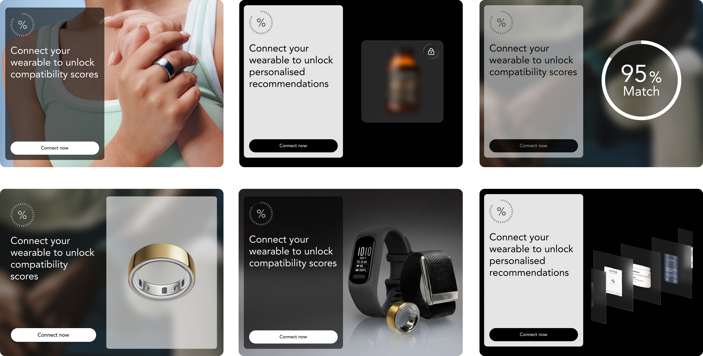
Onboarding
The connect flow itself, keeping the required login fast, clear and trustworthy before landing on personalised results.
Flow experiments
Different orderings of the same required steps, testing where login, privacy and the questionnaire should sit to keep the flow fast and trustworthy.
Intro
Healf login
Privacy
Select device
Wearable login
Questions
Completion
Select device
Privacy
Login to Healf
Wearable login
Skippable questionnaire
Syncing
Completion
Intro
Select device
Privacy pop ups
Healf login
Wearable login
Syncing
Completion
The outcome
Select device
Privacy pop ups
Healf login
Wearable login
Syncing
Completion
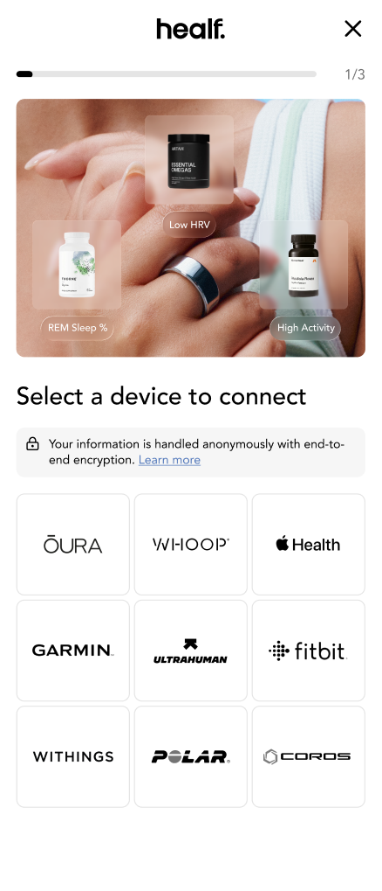
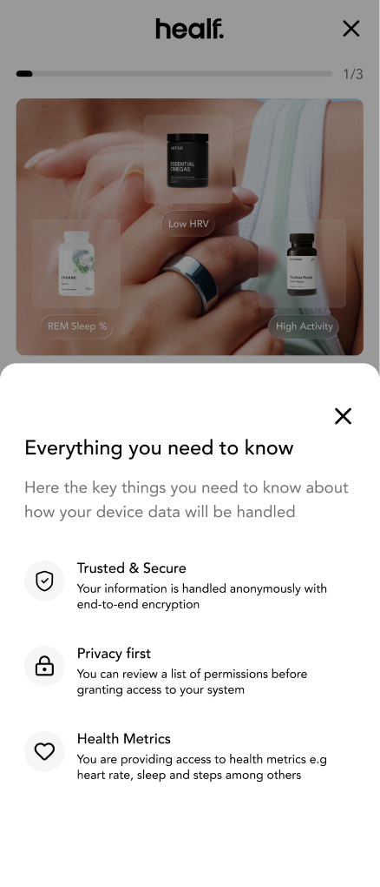
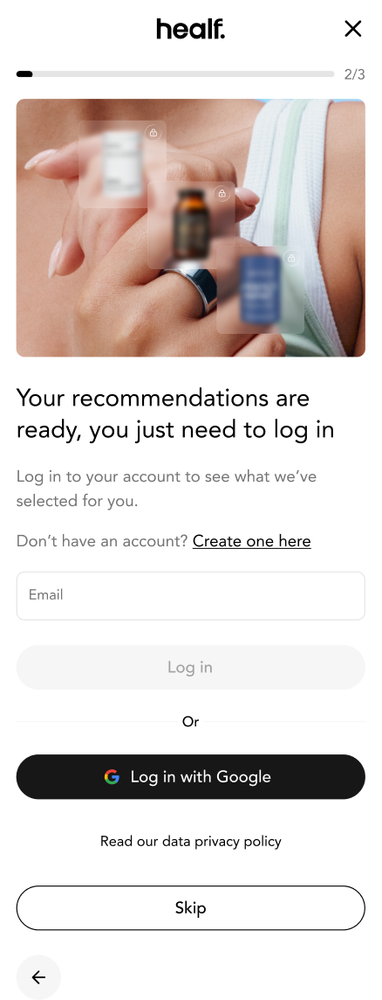
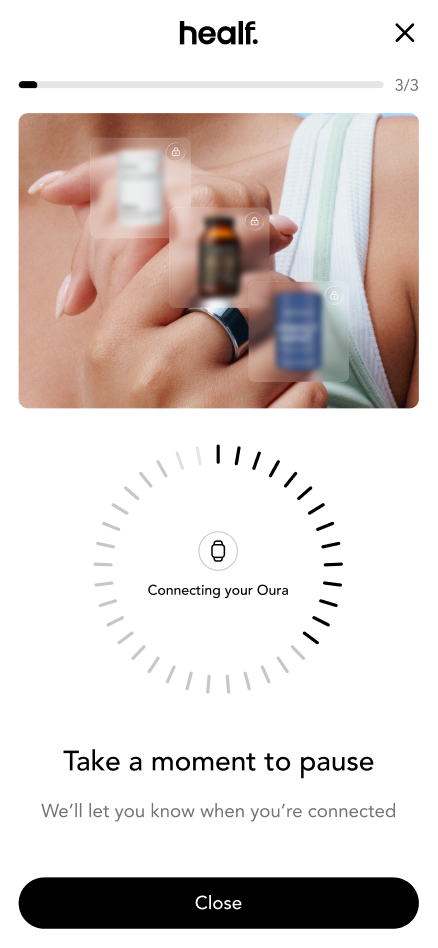
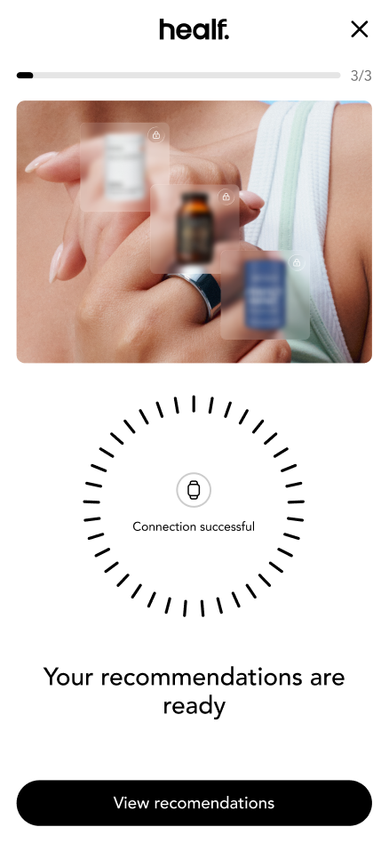
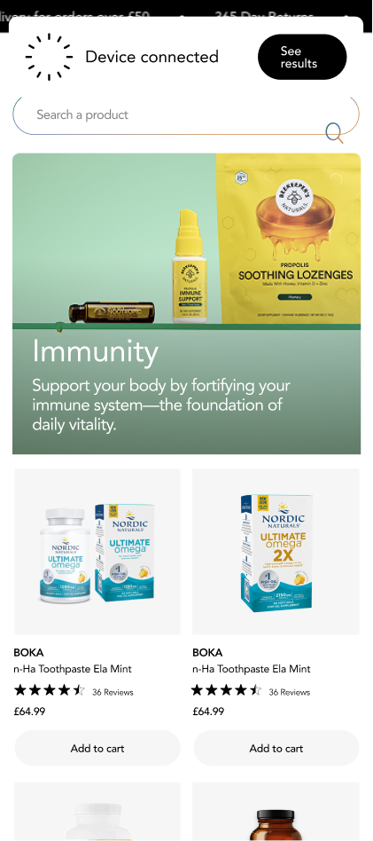
The loading wheel keeps the user engaged by signalling that the connection is happening. The copy "Take a moment to pause" adds a brand moment while holding their attention.


Connection flow
UI experiments to ensure the fastest possible route through the onboarding flow.
Results display
Designing the results around a match score, giving every recommendation a visible, immediate value.
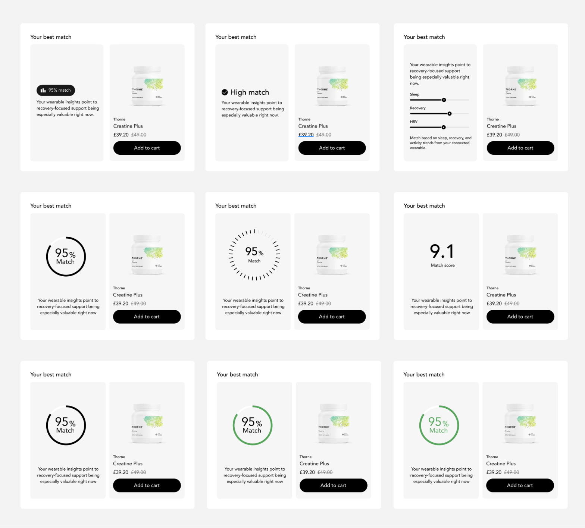


For You page
Explorations on how to showcase the product recommendations, and the insights and rationale, to create meaning and hold attention.
Account
Where users manage the connection: see what's linked, pause sharing, disconnect, or delete their wearable data at any time.
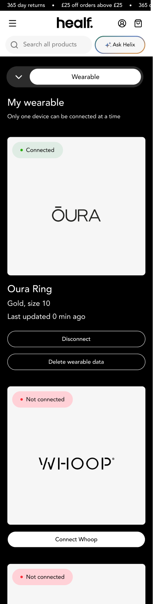
Connected
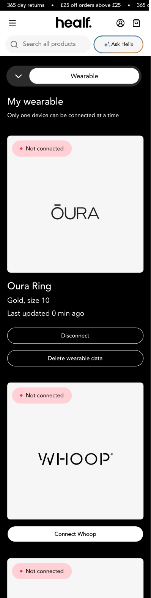
Connection dropped
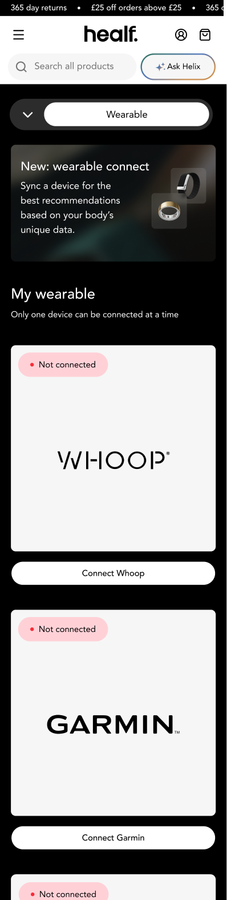
Not connected
Results
+11%
Wearable connection rate
Of users with known compatible devices, connected within the first month of launch.
+4%
Conversion uplift
On recommended products, powered by wearable data.
+23%
AOV increase
Among users with connected wearables compared to non-connected users.
+18%
Return visit rate
Increase in 30-day return visits for connected users.
The loop, now working
Engagement loop
Rich volume of data
Personalised recommendations
High confidence
Purchase
Credible user data
Industry first
Established Healf as one of the first wellness e-commerce platforms to meaningfully integrate wearable data into the shopping experience.